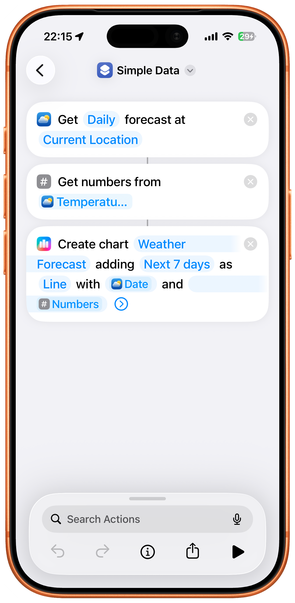
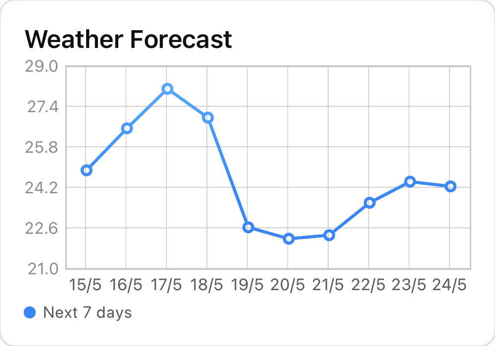
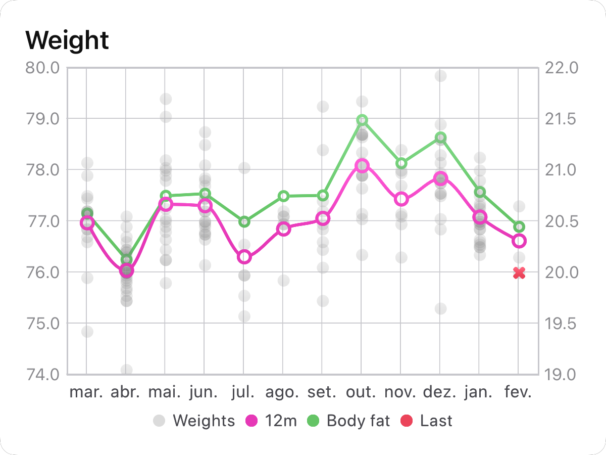
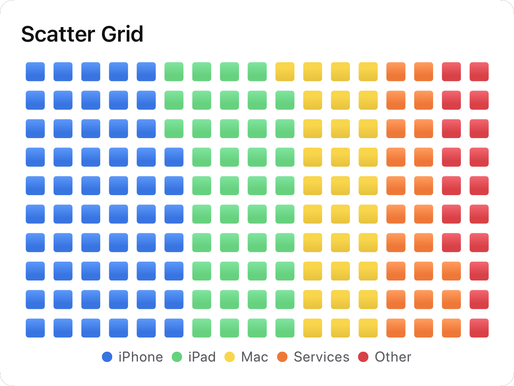
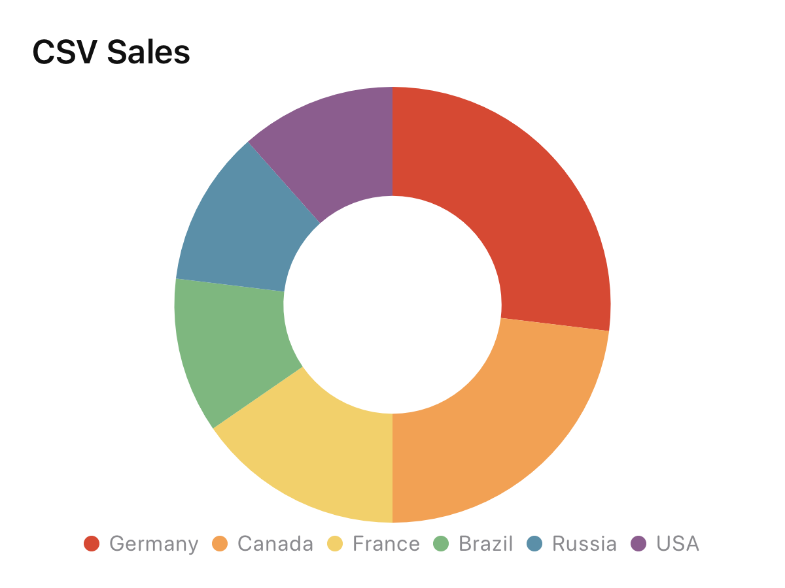
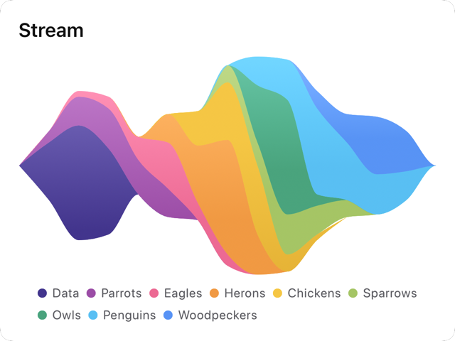
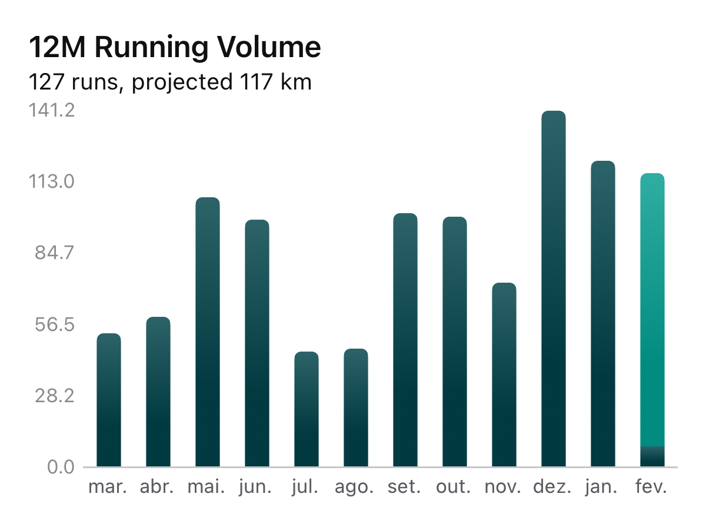
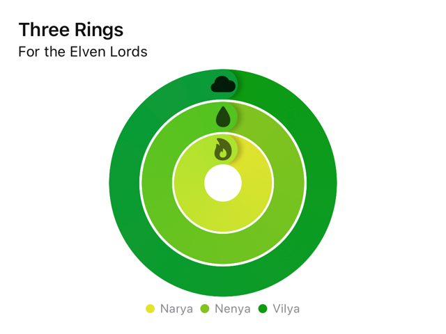
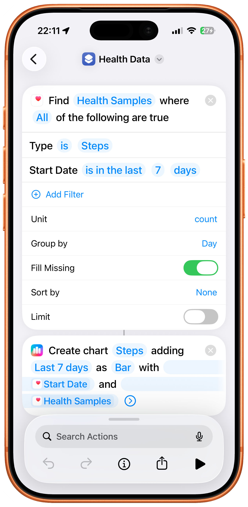
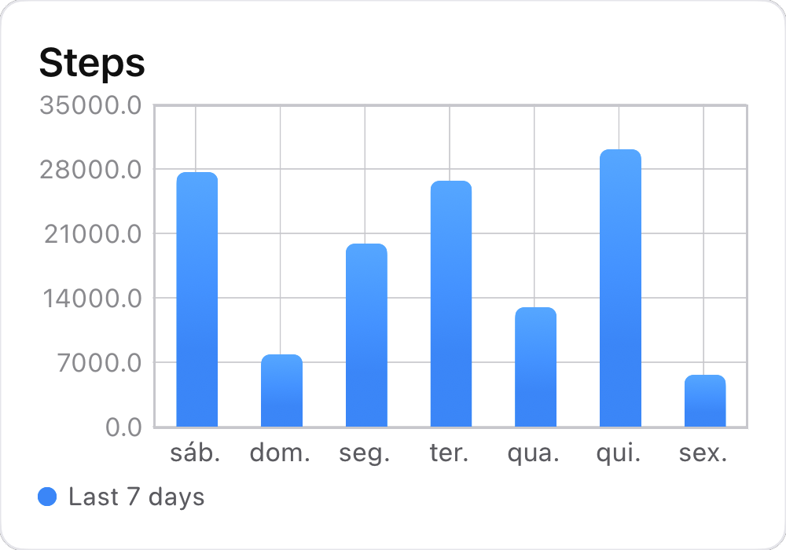

Everything you need to know about Charty. Can't find what you're looking for? Get in touch.
Charty is an iOS app that allows you to create charts directly from Apple's Shortcuts app. It provides 27 powerful actions that let you create, style, and export beautiful charts entirely from your shortcuts.
Shortcuts is the tool to create automation workflows on iOS and iPadOS.
Quoting Apple: Shortcuts includes over 300 built-in actions and works with many of your favorite apps including Contacts, Calendar, Maps, Music, Photos, Camera, Reminders, Safari, Health as well as any app that supports Siri Shortcuts.
You'll use Charty the same way you'd create a chart on paper: gather your data, draw a chart, plot your points, and share the result.
In a shortcut, you do this by adding Charty's actions one by one:


Charty is free to download with 5 Shortcuts actions: New Chart, Add Series To Chart, Style Chart, Delete Chart, and Get Information From All Charts.
To unlock all 27 actions and the full power of Charty, you can subscribe:
The subscription unlocks all premium actions including chart styling, data processing, CSV import, image export, widget updates, and more.
If you purchased the original $4.99 Charty Premium unlock, you have lifetime access to everything in Charty 2.0. You don't need to subscribe.
Starting with Charty 2.1, new features and actions will be exclusive to subscribers. But everything available in 2.0 remains yours forever.
Charty supports 7 types of series:






Charty adds 27 actions to Shortcuts:
| Action | Description | Tier |
|---|---|---|
| New Chart | Creates a new chart with the given title and subtitle | Free |
| Add Series To Chart | Adds a new series to a given chart | Free |
| Style Chart | Modifies the attributes of a given chart | Free |
| Delete Chart | Deletes the chart with the given ID | Free |
| Get Information From All Charts | Gets a dictionary of all charts, indexed by chart IDs, containing all available information except series points | Free |
| New Chart With Series | Creates a new chart and adds a new series to it in one step | Premium |
| Delete Series | Removes a series from a chart | Premium |
| Get Series Values | Extracts series data as newline-separated values | Premium |
| Add Series From CSV | Adds new series from a CSV file with configurable separators and decimal symbols | Premium |
| Export Chart As Image | Exports the chart as a PNG image with configurable dimensions, appearance, rounded corners, and border | Premium |
| Update Widgets | Updates the selected chart's widgets | Premium |
| Add Custom Theme | Adds the passed colors as a new theme | Premium |
| Style Axis | Configures X/Y axes with custom labels, min/max ranges, date formatting, and tick display | Premium |
| Style Bar Series | Modifies bar width, corner radius, and color | Premium |
| Style Line Series | Modifies line width, style, markers, and smoothing interpolation | Premium |
| Style Area Series | Modifies area fill, line, and marker attributes | Premium |
| Style Scatter Series | Modifies scatter marker shape and size | Premium |
| Style Ring Series | Modifies ring color, unit, and symbol display | Premium |
| Style Donut/Pie Series | Modifies per-value colors and label placement | Premium |
| Highlight Series | Highlights specific series with custom color and alpha | Premium |
| Modify Markers | Configures marker shapes (circle, square, triangle, diamond, cross, pentagon, plus, asterisk) and size | Premium |
| Add Average | Adds a series based on the average of other selected series | Premium |
| Add Moving Average | Adds a simple or cumulative moving average with configurable window size | Premium |
| Filter Data | Filters x and y lists based on comparison operators (equal, less than, greater than, between, etc.) | Premium |
| Group Data | Groups data by time periods (minute, hour, day, week, month, year) or equal values with aggregation (sum, average, count, min, max) | Premium |
| Accumulate Values | Creates a cumulative sum list from an input list | Premium |
If you have data stored as text with one value per line and no headers, you can pass the text directly as X or Y values to Charty. You'll usually be using repeat loops (either Repeat or Repeat With Each) combined with the Add To Variable action to create lists of values.
Inside the app, you can find detailed descriptions of each action's parameters, outputs, and behavior.
Yes! You can export charts as PNG images using the Export Chart As Image action directly in your shortcut, or from within the app itself.
Export options include:
Add the Export Chart As Image action to your shortcut and provide the ID of the chart you want to export. You can then configure the export parameters directly in the action — set the width, height, appearance mode, and optionally enable rounded corners, a border, or a transparent background.
The action outputs an image that you can save, share, or display using Shortcuts' Quick Look action.
Virtually any data source that provides Shortcuts support can be used with Charty.
For example, if you store data in text notes inside the Notes app, you can extract them using the Find Notes action, process it with Shortcuts, and plot it with Charty.
Yes! HealthKit has great Shortcuts support. You can use the Find Health Samples action to get almost any data from HealthKit, then process it with Shortcuts and plot it with Charty.


API data can also be extracted and plotted with Charty. You can use Shortcuts' Get Contents of URL action to make a request to any API, then process the JSON response and plot it with Charty.
Yes! Charty's premium Add Series From CSV action has full support for CSV files. You can select which columns should be used as X values and which as Y values, and configure custom separators and decimal symbols for international formats.
Yes! Use the free action Style Chart and select which theme you'd like to apply. You can also modify the default theme in Charty's settings so all new charts start with your preferred look.
Yes! Use the Add Custom Theme action to create a theme from a list of colors. You can also import theme files directly into the app.
Yes! Just pass the texts as the X values for your series and Charty will do the rest!
Charty supports 7 interpolation options for line and area series:
You can set the interpolation using the Style Line Series or Style Area Series actions.
Yes! Charty supports multiple stacking modes for bar and area series:
You can set the stacking mode using the Style Chart action.
Charty offers 5 widget types for your Home Screen:
Not yet, but Lock Screen widgets are on the roadmap. Stay tuned for a future update!
Use the Update Widgets action in your shortcut. After modifying a chart's data, simply add this action to refresh the corresponding widget on your Home Screen. You can also set up an automation in Shortcuts to update your widgets on a schedule.